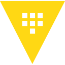

Cloud Platforms
AWS (EC2, EKS, RDS, ALB, S3, CloudFront, SQS/SNS, WAF, IAM, CloudWatch) · GCP (GKE, Pub/Sub) · Azure (AKS, DevOps) · Alibaba Cloud
// senior devops engineer · da nang, vietnam
20+ production projects · AWS · Kubernetes · GitOps · Observability
cat about.md
I'm Tai — a Senior DevOps Engineer from Da Nang, Vietnam. For the last 5+ years I've designed, built and operated cloud-native infrastructure for gaming, fintech, e-commerce, logistics and government platforms.
Today I lead DevOps at MTL Technology: 20+ production projects across multiple AWS accounts — full ownership of CI/CD (Jenkins, ArgoCD, GitLab CI), EKS clusters with cost-optimized spot strategies, and an OpenTelemetry-based observability stack with SLO/error-budget dashboards and burn-rate alerting.
I practice shift-left security (SonarQube, Snyk, Trivy, Gitleaks in the pipeline), and when a project needs it I ship product code too — Java/Spring Boot on the backend, React/Next.js on the frontend.
Available for freelance & consulting
kubectl get skills -o wide
AWS (EC2, EKS, RDS, ALB, S3, CloudFront, SQS/SNS, WAF, IAM, CloudWatch) · GCP (GKE, Pub/Sub) · Azure (AKS, DevOps) · Alibaba Cloud
Kubernetes (EKS, GKE, AKS) · Docker & Compose · Helm Charts · TargetGroupBinding / NLB sharing · spot node strategies
Jenkins (Shared Libraries) · ArgoCD · GitLab CI · AWS CodePipeline · Azure DevOps
Terraform · Ansible (+ AWS SSM for Windows) · Salt Stack
OpenTelemetry · Prometheus · Grafana (SLO / error budget, burn-rate alerts) · ELK · Loki · Fluent Bit · PostHog (self-hosted)

SonarQube (SAST) · Snyk (SCA) · Trivy · Gitleaks · HashiCorp Vault · AWS WAF · OWASP Top 10
MySQL · PostgreSQL · MongoDB · Redis · OpenSearch/Elasticsearch · Kafka · ActiveMQ · SQS/SNS
Shell/Bash · Groovy · Java 17 / Spring Boot 3 · React 18 / Next.js 14 · TypeScript
git log --oneline --graph career
ls -la ./featured-work
Found a legacy MySQL on EKS quietly exposed to the internet through a public NLB (ap-northeast-1). Recovered data from binary logs + EBS snapshots, then closed the hole for good: ClusterIP conversion, Security Group lockdown.
impact: zero data loss · exposure eliminated
AWS · EKS · NLB · MySQL · binlog · EBS
Ran infrastructure for a large-scale US banking platform: 150+ VMs and 100+ Kubernetes nodes, config-managed with Salt Stack and provisioned with Terraform across AWS and GCP. Peak-hour scaling events stayed invisible to users.
impact: 90→150 nodes at peak · zero downtime
AWS · GCP · K8s · Salt Stack · Terraform
Built the org-wide observability stack on OpenTelemetry, Prometheus and Grafana. Alerting is SLO-driven — error budgets with multi-window burn-rate rules — so incidents surface proactively, not after the support tickets.
impact: SLO/error-budget standard across 20+ projects
OpenTelemetry · Prometheus · Grafana · Loki
A high-security payment platform integrating banks, VNPAY and Momo. Designed the AWS estate under Control Tower multi-account governance — EC2, ECS, Lambda, VPC, WAF, all in Terraform — with CloudTrail audit logging and automated-rollback CodePipeline deploys.
impact: multi-account governance · rollback-safe deploys
AWS · Control Tower · Terraform · CodePipeline
Provisioned the platform end-to-end with Terraform on GCP — GKE, Pub/Sub, MariaDB — and built the full CI/CD path from code scan to ArgoCD deploys. Then went bottleneck-hunting in production.
impact: +20% performance · −15% downtime
GCP · GKE · Terraform · Jenkins · ArgoCD
Co-developed a non-profit Vietnamese Bible quiz platform end-to-end: Java 17 / Spring Boot 3.3 backend, React 18 + Vite 5 + TypeScript frontend. Proof that "full-stack capable" on my CV isn't decoration.
impact: ~75 endpoints · ~30 tables · ~370 tests
Java 17 · Spring Boot 3 · React 18 · Vite
./contact-me.sh
Need someone to own your infrastructure, unblock your pipeline, or rescue a production incident? Available for freelance & full-time.